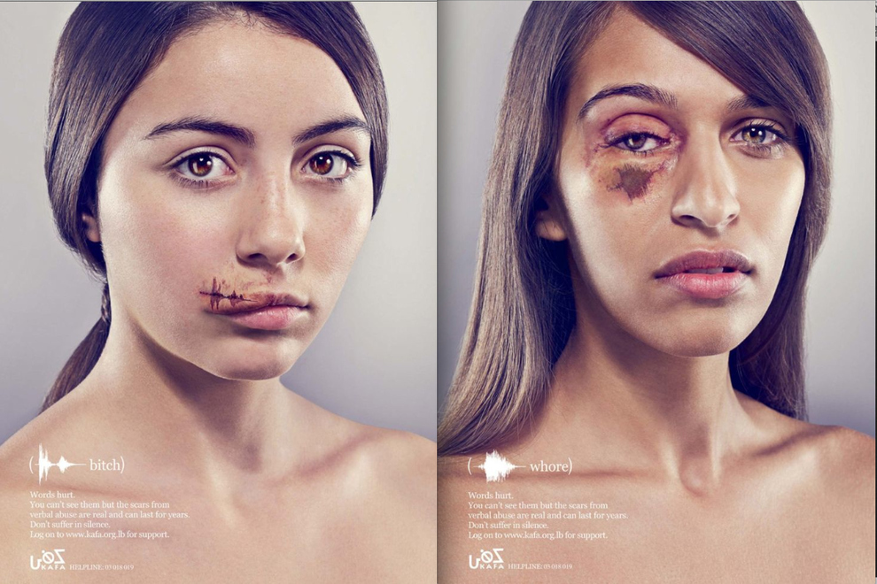
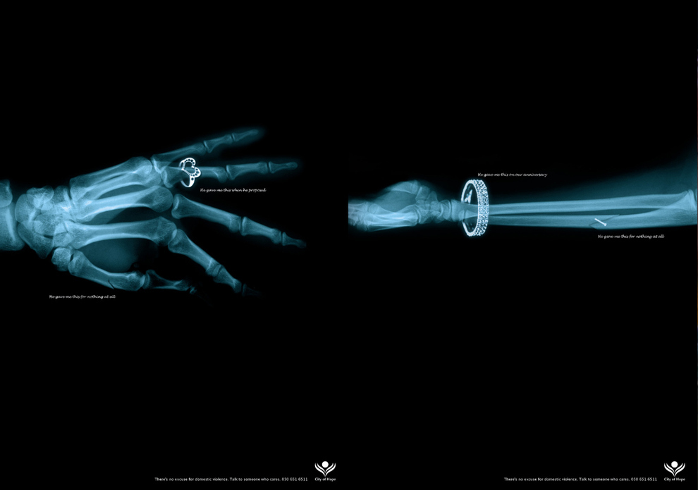
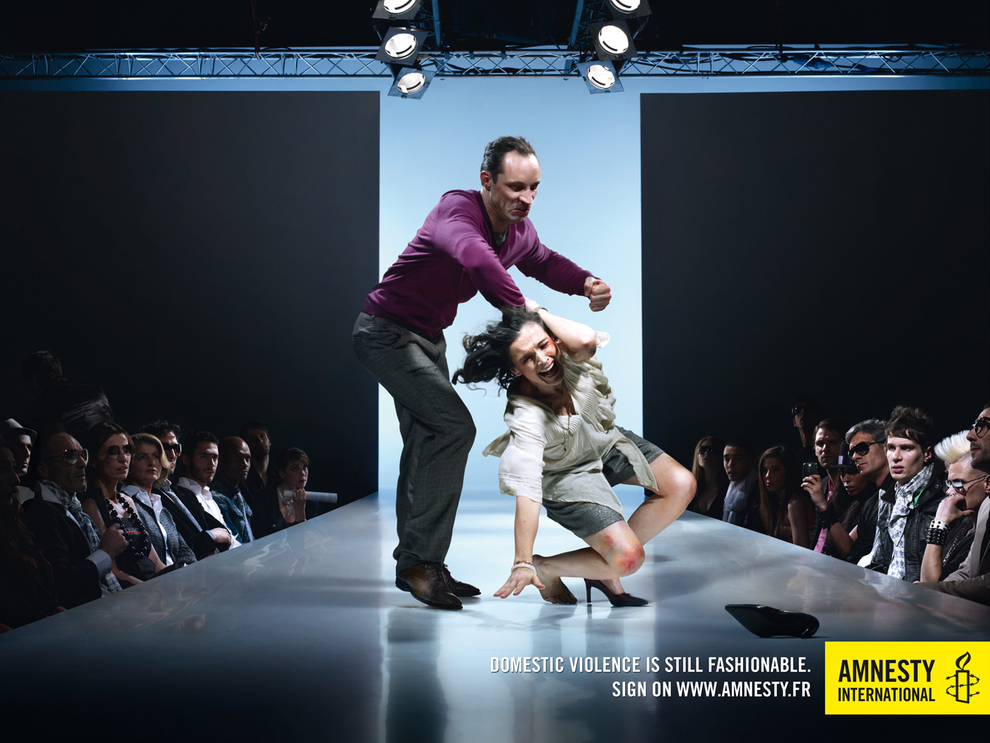

|
|

تصویر و کلام در برابر خشونت؛ طرحهایی از سراسر جهان برای افزایش آگاهی در مورد خشونت خانگی/ روژین محمدی
يكشنبه3 شهریور 1392
تغییر برای برایری - پژوهش ها نشان میدهند که خشونت علیه زنان پدیده ای جهانی است. ممکن است کشوره بنا به ذائقه ی سیاست مدارانشان آن را تقلیل دهند یا توجیه کنند، اما وجودش آنقدر بدیهی است که نمی توان آن را به کلی انکار کرد. یکی از راههای مبارزه با «خشونت علیه زنان» درگیر کردن مردم در زندگی روزمره و حساس کردن انها به امید برانگیختن واکنش مثبت از سوی آنهاست. در این راستا ابزاری که بسیار به کار می آید، تبلیغات تاثیر گذار و بهره گرفتن از موسیقی، تصویر، کلام و بالاخره اعتبار اجتماعی گروههای مرجع است. مطلبی که در ادامه می آید تلاشهای صورت گرفته در برخی از کشورها برای مقابله با خشونت علیه زنان است.
1-لبنان:

خشونت ها همیشه فیزیکی نیستند.
شکل زخم ها متناسب با موجی که از بیان کلمات تولید می شود است- بسیار تکان دهنده و اثر گذار
2-بریتانیا:
ویدئوی تبلیغاتی دردناک پلیس متروپولیتن لندن. "حدود یک قتل از هر 5 قتل در لندن به خشونت خانگی مربوط می شود." ممکن است شما در آپارتمان کناری نشسته باشید و شاهد رخ دادن یکی از این خشونت ها باشید.
پیام این ویدئو مشخص بود:" شما تماس بگیرید. ما متوقفش خواهیم کرد."
3-امارات عربی متحده:

از بابت کیفیت بد تصویر پوزش می خواهیم اما اینجا می توایند متن آن را بخوانید:
"وقتی به من پیشنهاد ازدواج داد این را به من هدیه کرد ( در کنار انگشتر- در تصویر راست " برای سالگرد ازدواجمان")
این کار را بدون هیچ دلیلی با من کرد ( کنار استخوان های شکسته)
هیچ توجیهی برای خشونت های خانگی وجود ندارد.با کسی که به این موضوع اهمیت می دهد، صبحت کن"
تصاویر ساخته شده از عکس های اشعه X در تبلیغات بسیار مرسوم است. با وجود اینکه این اولین بار است که به درستی از آن استفاده شده است.
4-فرانسه:

استفاده نامنسجم از عناصر صحنه توانایی ایجاد یک تبلیغ ناراحت کننده را ایجاد کرده است.
5-آلمان:
صحنه زیبایی که جمله " آه من یهو حس کردم پایین پله ها افتادم"را نشان می دهد. جمله ای که زنان از ترس گزارش دادن خشونت علیهشان می گویند.در این تبلیغ از دو زن بدلکار برای اجرای سقوط استفاده شده است.
6-سنگاپور:

" اگر یک بار اتفاق بیفتد، باز هم می تواند رخ دهد."
تصویر سازی قوی از خشونت های زنجیره ای که غالبا اتفاق می افتد.
7- فرانسه:
FNSF - Le film choc from FNSF on Vimeo.
یک آگهی دعوت به اقدام علیه خشونت های خانگی ناراحت کننده که مخاطب را وادار به عقب نشینی می کند
8- بریتانیا:

"از دستان شریکت رنج نبر"
9- بریتاینا (با شرکت کیرا نایتلی)
توجه: این ویدئو بسیار خشن است
این ویدئو توسط جو رایت کارگردان فیلم کفاره ساخته شده است.
در این ویدئو نمی توان فریاد زد" کات"
از هنرپیشه ای معروف به خوبی استفاده شده است.
10 -آلمان:

این پوستر در ایستگاه اتوبوسی در برلین نصب شده است.
یک دوربین حساس به حرکت چشم در این صفحه نصب شده است. به نحوی که وقتی کسی مستقیم به آن نگاه می کند، تصویر خشونت با تاخیر عوض شده و جای خود را به تصویری از رابطه عادی بین زن و مرد می دهد.
" زمانی که کسی نمی بیند اتفاق می افتد."
ایده بسیار خوبی است.
11- صربستان:
در اینجا استفاده افراطی از تکنیک چهر شخص در هر روز تبدیل به ابزاری قدرتمند شده است.
نام این ویدئو این است: " هر روز یک عکس از من در بدترین سال عمرم"
پیام پایانی ویدئو این است:" کمکم کنید. نمی دانم آیا می توانم منتظر فردا باشم."
نکته به خوبی گرفته و نشان داده شده است
12-آمریکا ( قویترین تبلیغ ضد خشونت خانگی که تاکنون ساخته شده است):
چیز زیادی برای گفتن نمی ماند
نامگذاری این ویدئو نامناسب است: اتحاد علیه زنان ستم دیده.باید " برای " خوانده شود.